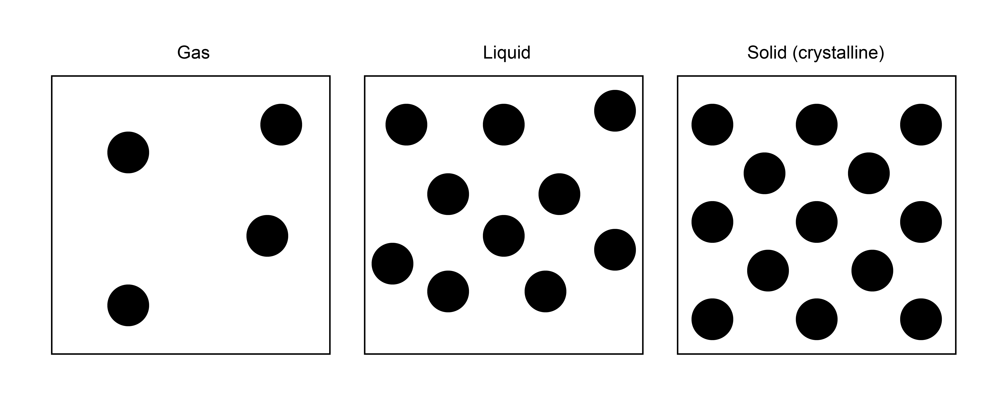
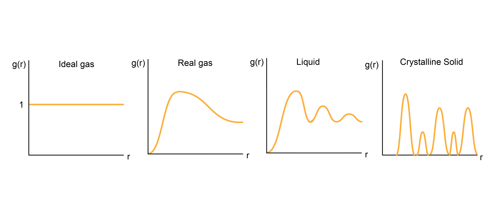

Distribution of particles in states of matter#
Additional Readings for the Enthusiast#
Frenkel and Smit [2], 7.1-7.3
Goals for this lecture#
Describe where the probability distributions of where particles are in a simulation box
Algorithmically determine the radial distribution function g(r)
Understand how g(r) changes for different states of matterq
Importance of liquid structure#
We have now outlined the algorithms underlying the Monte Carlo and Molecular Dynamics techniques and identified methods for sampling from the canonical ensemble, which is an appropriate ensemble for many systems. We have emphasized the point that during these simulations it is important to sample some simulation observable, then by proper averaging at the conclusion of a simulation we can gain some insight into the behavior of our system. Previous observables we have discussed included the temperature and energy. In this lecture, we will describe a different observable that is related to the structure of a set of particles, which will both give important information about the phase of the system being studied as well as its thermodynamic properties.
Consider a set of particles that we want to classify as being gas-like, liquid-like, or solid-like. One thing we know about these different phases is that their spatial arrangement of particles is dramatically different. In a solid, particles tend to be clustered very near to each other in their crystalline arrangements, while in a gas they tend to spread far apart. A liquid falls somewhere in between, where particles are condensed but lack the ordered structure inherent to solids. Knowing this, we can interpret the structure of a liquid by looking at the relative positions of two particles. That is, if particles tend to be near each other, they are more solid-like; particles that have no preference for being close to each other are more gas-like. We can quantify this thinking by studying the radial distribution function as we will now discuss.

Reduced configurational distribution#
First, let us again show that we can ground this discussion in the study of statistical mechanics, assuming that any given fluid system of interest can be treated as at constant \(NVT\) (we could generalize to \(NPT\) without much difficulty). Recall that we can write the canonical partition function for a classical fluid using the notation:
This expression integrates over all possible particle configurations in a continuous space with phase space volume \(V^N\), representing all possible combinations of positions. Here, we let \(E(\textbf{r}^N)\) refer to only the potential energy of the system associated with particle-particle interactions and ignore the kinetic energy contribution due to particle velocities, as we have noted previously that velocities are only a function of the temperature and not particle positions. Alternatively, we can also write this integral by breaking up \(\textbf{r}^N\) into each of the \(N\) different position vectors for the different particles.
Here, subscripts indicate the index of one particular particle. Using either notation, the probability of finding the system in some configuration \(\textbf{r}^N\) is the
- configurational distribution#
- \[\begin{split}\begin{aligned} p(\textbf{r}^N) &= \frac{\exp \left [-\beta E(\textbf{r}^N)\right]}{\int_{V^N} d\textbf{r}^N \exp \left [-\beta E(\textbf{r}^N)\right]} \\ &= \frac{\exp \left [-\beta E(\textbf{r}_1, \textbf{r}_2, \textbf{r}_3, \dots \textbf{r}_N )\right]}{\int_V d\textbf{r}_1 \int_V d\textbf{r}_2 \int_V d\textbf{r}_3 \dots \int_V d\textbf{r}_N \exp \left [-\beta E(\textbf{r}_1, \textbf{r}_2, \textbf{r}_3, \dots \textbf{r}_N )\right]} \end{aligned}\end{split}\]
Again, this is technically a probability density function, like the Maxwell-Boltzmann distribution, and is the probability of observing the system in a small volume of phase space near \(\textbf{r}^N\); it has units of volume\(^{-N}\) as a result since \(\textbf{r}^N\) has units of \(V^N\).
Now, let’s consider a different question. Rather than asking the probability of a particular configuration of particles, let’s ask the probability that particle 1 is at position \(\textbf{r}_1\). Recall that back in our derivation of the canonical ensemble, we divided a combined system into a small system of interest and a bath, and we said that the probability that the bath obtains a microstate is proportional to the number of equivalent bath states. We can use the same idea here, and say that the probability of a configuration in which a specific particle has some particular position is given by integrating the probability of a system configuration over all other particle positions. In other words, we can write the:
- reduced configurational distribution#
- \[\begin{split}\begin{aligned} p(\textbf{r}_1) &= \frac{ \int_V d\textbf{r}_2 \int_V d\textbf{r}_3 \dots \int_V d\textbf{r}_N \exp \left [-\beta E(\textbf{r}_1, \textbf{r}_2, \textbf{r}_3, \dots \textbf{r}_N )\right]}{Z} \\ &= \int_V d\textbf{r}_2 \int_V d\textbf{r}_3 \dots \int_V d\textbf{r}_N p(\textbf{r}^N) \end{aligned}\end{split}\]
What this expression says is that we fix the position of particle 1 at \(\textbf{r}_1\), then we integrate the probability density function over the rest of the phase space where the other particle positions can obtain any value. We are now asking the probability of being in one specific region of phase space (i.e., the region where the position of particle 1 is fixed). This expression assumes that there is a particular particle with index 1 at position \(\textbf{r}_1\). Alternatively, we could insead calculate the probability that any of \(N\) identical particles is at position \(\textbf{r}_1\) as opposed to a specific tagged particle. Since the particles are identical, this probability is just \(N\) times larger, leading to the:
- generic reduced configurational distribution#
- \[\begin{split}\begin{aligned} \tilde{p}(\textbf{r}_1) &= Np(\textbf{r}_1)\\ &= N\int_V d\textbf{r}_2 \int_V d\textbf{r}_3 \dots \int_V d\textbf{r}_N p(\textbf{r}^N) \end{aligned}\end{split}\]
Here, any particle can occupy position \(\textbf{r}_1\). Let’s extend this concept to multiple positions. Now, we can calculate the probability that any particle is at position \(\textbf{r}_1\) and any particle is at position \(\textbf{r}_2\). Again, we fix these positions, then integrate over the positions of all other particles. We recognize that there are \(N\) ways to choose the first particle and \(N-1\) ways to choose the second. Our expression is then:
We could continue to generalize this notation, but there is no need for our present purposes.
The radial distribution function#
Let’s consider simplifying these two reduced configurational distribution functions for a system consisting of a homogeneous, isotropic fluid. That is, assume the fluid is uniform spatially - the properties of the system are unchanged if I look in any direction through the fluid. Equivalently, an isotropic fluid can be thought of as one in which translating/rotating all particle positions does not influence the probability of a configuration; an anisotropic fluid would be one in which such manipulations would change the system energy (e.g. due to interactions with system boundaries). First, consider the expression:
This expression is the probability density function for finding a particle in some small volume, \(dV\), centered at some position \(\textbf{r}_1\). Since the particle has to be within the volume, then the probability density function is normalized such that:
That is, the probability when summed over all possiblve values of \(\textbf{r}_1\) within the volume has to be one. For an isotropic fluid, there will be an equal likelihood that we can find a single particle at any position in the volume since we are integrating over the positions of all other particles - there is no reason why any one position should be favored over another. Therefore, the normalization condition enforces that \(p(\textbf{r}_1) = 1/V\), indicating an equal likelihood of finding a particular particle anywhere in the volume. The generic reduced configurational distribution for a single particle is then:
Here, \(\rho\) is simply the number density of the system. Thus, the density of the system tells us the probability of finding a particle in any given small volume of the system independent of the positions of its neighbors.
Now let’s consider the reduced configurational distribution for two particles:
Unlike the former case of studying only a single particle, now there are possible correlations between particles. That is, certain pairs of positions may be more likely than others due to the interaction of particle 1 and 2, even when integrating over the positions of all other particles. Let’s first assume that the particles in our system are completely uncorrelated because they do not interact; that is, we have an ideal gas. In that case, the probability \(p(\textbf{r}_1, \textbf{r}_2)\) can be factorized into two single-particle probability distributions since the two particles are independent of each other. We can then write:
Here, we assume that \(N\gg1\) for a typical system and approximate this joint probability distribution function as the density squared. This result is true for an ideal gas, but in general a real system will have some deviation from ideality that emerges from interactions between pairs of particles. We will define a function, \(g(\textbf{r}_1, \textbf{r}_2)\), as the:
- pair-correlation function#
- \[\begin{split}\begin{aligned} g(\textbf{r}_1, \textbf{r}_2) &= \frac{\tilde{p}(\textbf{r}_1, \textbf{r}_2)}{\tilde{p}(\textbf{r}_1, \textbf{r}_2)_{\textrm{ideal}}} \\ &= \frac{\tilde{p}(\textbf{r}_1, \textbf{r}_2)}{\rho^2} \end{aligned}\end{split}\]
This expression reflects the tendency for pairs of particles to be distributed at certain positions relative to each other with probabilities that deviate from what would be expected for an ideal gas. The expression would be 1 for all pairs of positions for an ideal gas. For completeness we can rewrite this as:
This expression will be useful in the next lecture. For an isotropic system, \(g(\textbf{r}_1, \textbf{r}_2)\) only depends on the distance between two particles, \(r = |\textbf{r}_1-\textbf{r}_2|\). Again, this is because all directions in an isotropic fluid are equivalent, so if we rotate the entire system there is no change in the probability. Equivalently, I can imagine placing particle 1 at some position, then placing particle 2 a distance \(r\) away - rotating the entire system, including particle 2, while preserving the same distance \(r\) does not change the system properties. For an isotropic system we can then write the pair-correlation function as the
- radial distribution function#
- \[\begin{aligned} g(r) \equiv g(\textbf{r}_1, \textbf{r}_2) \end{aligned}\]
where \(r\) is the scalar distance between particles at position \(\textbf{r}_1\) and \(\textbf{r}_2\).
If we assume that one of these particles is always at the origin of the coordinate system, and we know that the probability of that particle being at the origin is \(\rho\) since that is the single-particle reduced distribution function, then we arrive at the result:
Here, we write the conditional probability density that any particle is at a distance \(r\) away from any particle placed at the origin. Hence we finally achieve the following definition: for a given particle \(i\) in a system, which we will say is “tagged” and placed at the origin of the coordinate system, the radial distribution function tells us the probability of a particle being a distance \(r\) away from the tagged particle relative to what would be observed in an ideal gas. Alternatively, we could say that the quantity \(\rho g(r)\) tells us the average number density of particles at a distance \(r\) away from a single tagged particle. This last definition is probably the most intuitive.
\(g(r)\) for different states of matter#
Having defined \(g(r)\), let’s qualitatively discuss how it should behave. As we said, for an ideal gas, the radial distribution function should be exactly 1 for all distances \(r\) between a tagged particle and any other given particle on average. For a real gas, then, the average density will approach the overall density at far distances, but \(g(r)\) will be zero for distances less than the diameter of each gas particle - that is, real gases exclude volume. There is also like some enhanced average density at close distances between particles, reflecting some weak attractive intermolecular interactions. For solids, in which atoms are in very precise spatial positions, \(g(r)\) will have sharp peaks reflecting the typical distances between atoms in crystalline materials. Finally, for liquids, \(g(r)\) will fluctuate around the bulk density, with high density regions reflecting so-called solvation shells where atoms prefer to accumulate due to favorable interactions. Thus, calculating \(g(r)\) alone can tell us structural information, such as the preferred distances between particles. Moreover, we can derive a series of other thermodynamic properties from this expression, one of which will be discussed below. First, however, let us discuss how to calculate this quantity in a simulation.

Calculating \(g(r)\)#
Let’s now talk about how to algorithmically calculate \(g(r)\) based on our above discussion. In principle, \(g(r)\) is a continuous quantity, but in a MD simulation we discretize space. Therefore, we can calculate \(g(r)\) by populating a histogram of pairwise distances and normalizing appropriately. We divide the distance, \(r\), into a set of bins of width \(dr\) that discretizes the distance coordinate. We can number the bins such that bin \(i\) refers to the set of distances between \(dr \times i\) and \(dr \times (i+1)\). Each bin then refers to a volume of space given by \(\frac{4\pi}{3}dr^3[(i+1)^3 - (i^3)]\).
Recalling that our definition of \(g(r)\) is the average density of particles a given distance \(r\) apart divided by the overall density, we can write the following algorithm:
During a converged simulation, periodically iterate over all particles. For each particle, calculate the distance \(r\) to every other particle.
For each distance, calculate the corresponding index of the bin in the histogram; that is, calculate \(r/dr\) and round to an integer (or round down, depending on how you define your bins). Increase the value of this bin by 1.
Repeat steps 1 and 2 a number of times during a simulation (i.e., every time you save the energy after convergence).
Normalize the histogram at the end of the simulation. This requires dividing each bin by the number of samples (to time average), the number of particles in the system (since we iterate over all particles each timestep), and the volume of the bin (to get a density). Finally, divide all bins by the bulk density (\(N/V\)) to get \(g(r)\).
Symbolically, this procedure can be written as:
The function \(\delta(r-r_{ij})\) is a delta function that returns 1 if the distance is within the small bin width of \(dr\) around the desired distance \(r\); this is captured by incrementing bins in our histogram. The ensemble-average of this sum is equal to averaging over the number of samples (i.e., time-averaging). The term \(1/V(r)\) normalizes each bin by its volume to get an average density per bin. The term \(1/N\) normalizes the sum by the number of particles, since we iterate over all particles each time we sample. Finally, \(1/\rho\) normalizes \(g(r)\) by the bulk density as desired. Calculating this for each value of \(r\) would yield a complete \(g(r)\) curve.